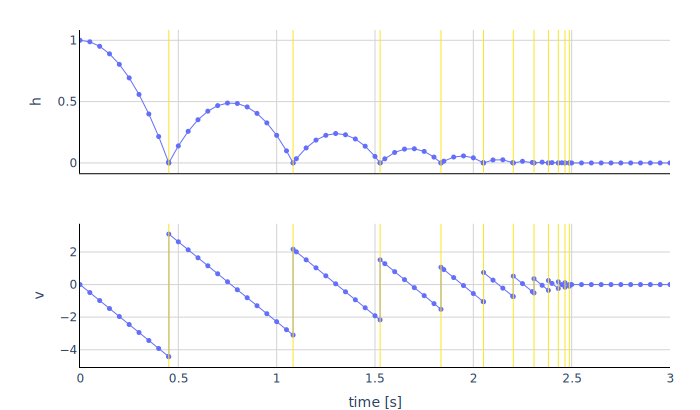

The BouncingBall implements the following system of equations:
der(h) = v
der(v) = g
when h <= 0 then h := 0 and v := -e * v
when v < v_min then h := 0 and v := 0
with the variables
| Variable | Start | Unit | Causality | Variability | Description |
|---|---|---|---|---|---|
| time | independent | continuous | Simulation time | ||
| h | 1 | m | output | continuous | Position of the ball |
| der(h) | m/s | local | continuous | Derivative of h | |
| v | 0 | m/s | output | continuous | Velocity of the ball |
| der(v) | m/s2 | local | continuous | Derivative of v | |
| g | -9.81 | m/s2 | parameter | fixed | Gravity acting on the ball |
| e | 0.7 | parameter | tunable | Coefficient of restitution | |
| v_min | 0.1 | m/s | local | constant | Velocity below which the ball stops bouncing |
The plot shows the trajectories of the output variables computed with fmusim.
fmusim --interface-type me --solver cvode --output-interval 0.05 --output-file BouncingBall_out.csv BouncingBall.fmu